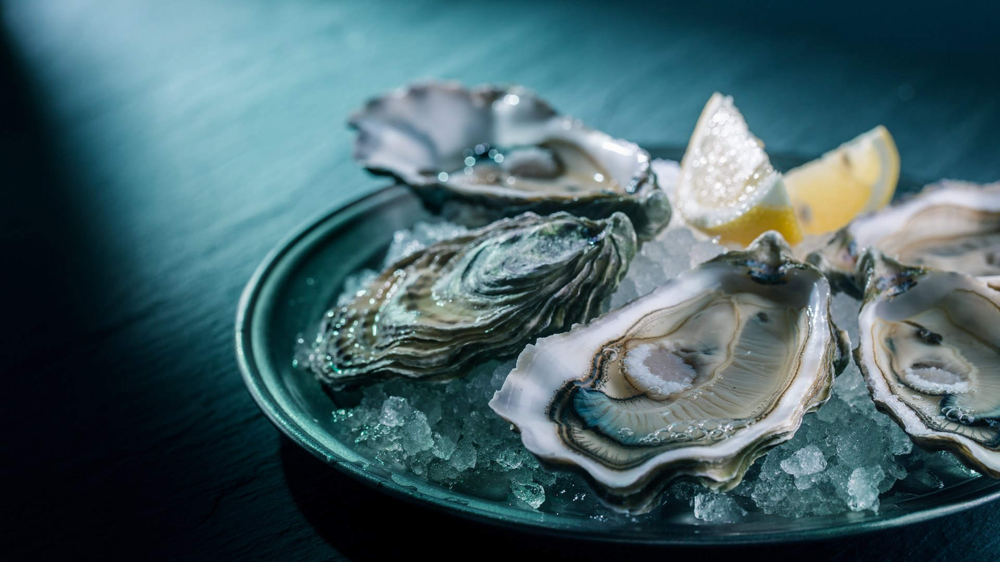
러시안
굴렛
같은 굴을 나눠 먹어도
누구는 앓고 누구는 멀쩡하다.
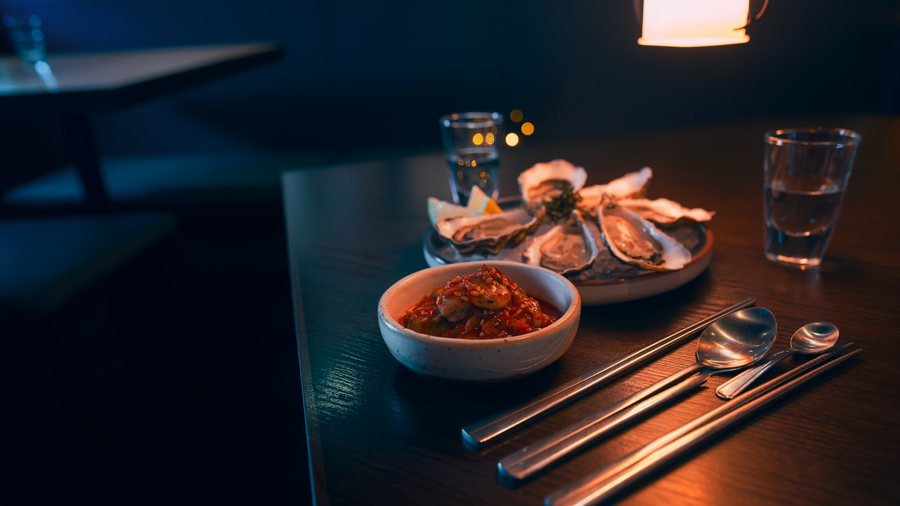
회사원 A씨는 겨울마다
생굴을 찾았다.
굴젓도 즐겨 먹었다.
생굴을 먹은 뒤 몸이 아팠던 적이
다섯 번 있었다.
결국 생굴을 끊었다.
두세 명이 같은 상에서 굴을 먹었는데
A씨만 탈이 난 날도 있었다.
같은 음식을 먹고도 왜 결과는 달랐을까.
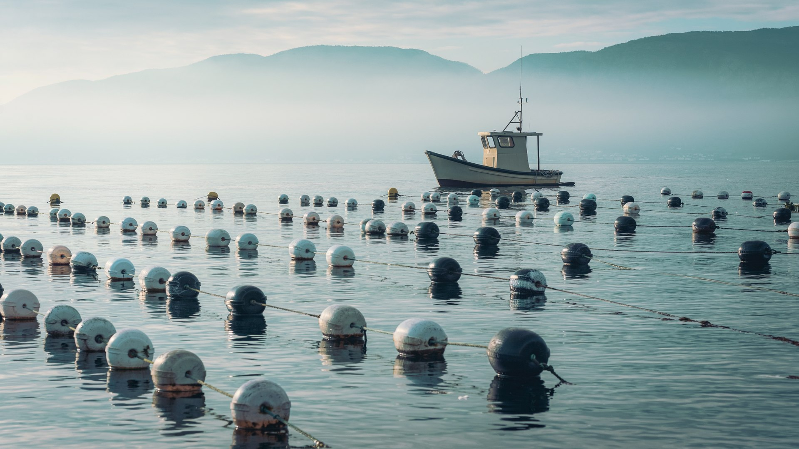
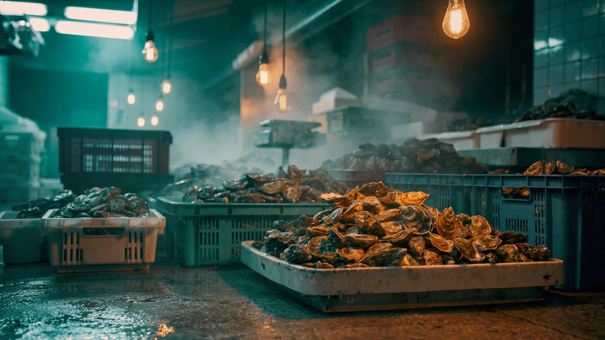
질병관리청 집계
0건
2025년 노로바이러스 감염증 표본감시 신고 건수
2024년(6,766건)보다 29.0% 늘었다. 2022년 4,673건, 2023년 5,926건에 이어 4년 연속 증가했다.
유행 시기
노로바이러스 감염은 11월부터 늘어
이듬해 봄까지 이어진다.
겨울철 환자 발생이 두드러진다.
제철
생굴이 식탁에 자주 오르는
계절과 겹친다.
다만 노로바이러스는 굴뿐 아니라 오염된 물과 음식, 사람 간 접촉으로도 옮는다.
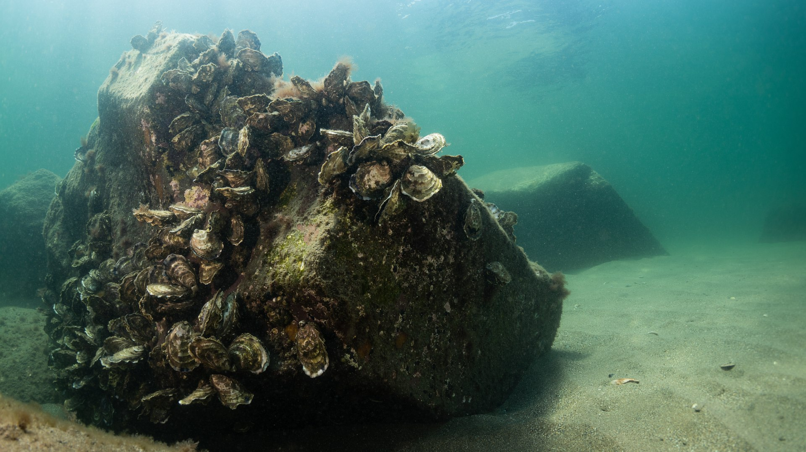
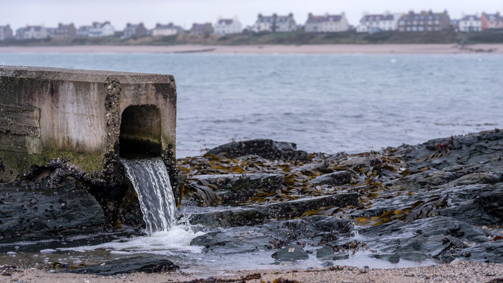
굴 한 개 · 하루 0L다 자란 굴 기준 최대치
바닷속으로 · 여과 섭식
굴은 바닷물을 들이마시며
먹이를 걸러 낸다.
아가미를 통과하는 물에서 플랑크톤과 유기물을 붙잡아 먹는다.
다 자란 굴 한 개가
하루 최대 190L를 거른다.
미국 해양대기청(NOAA)이 제시한 최대치다. 실제 여과량은 환경에 따라 달라진다.
축적
바닷물에 섞인 노로바이러스도
굴의 몸속에 쌓일 수 있다.
바이러스는 굴의 소화샘 등 조직에 축적될 수 있다. 오염됐더라도 겉모습이나 냄새만으로 알아채기 어렵다.
바닷물 속 바이러스의 출처
굴 속 노로바이러스의 출발점은
사람의 분변일 수 있다.
감염자의 분변에 섞인 바이러스가 하수 등을 거쳐 양식 해역으로 들어갈 수 있다. 굴은 오염된 물을 거르면서 바이러스를 축적하고, 이를 날로 먹은 사람은 다시 감염될 수 있다. 모든 굴이 오염됐다는 뜻은 아니다.
그날의 밥상
상에는 생굴 한 접시와
굴젓이 올랐다.
굴젓도 생굴을 소금에 절여 만드는 음식이다.
같은 접시에 담긴 굴도
바이러스 양은 서로 다를 수 있다.
개별 굴의 바이러스 양을 조사한 연구에서도 같은 생산지의 굴 사이에 차이가 확인됐다. 어느 굴을 얼마나 먹었는지에 따라 바이러스에 노출된 양이 달라질 수 있다.
먹은 양만으로
누가 아플지 단정할 수도 없다.
바이러스의 양뿐 아니라 각자의 유전적 특성도 감염에 영향을 준다.
장 점막에서 일어나는 일
일부 노로바이러스는
장 점막의 특정 당 성분에 달라붙는다.
장 점막에 있는 혈액형 관련 당 항원은 일부 노로바이러스가 결합하는 자리다. 그러나 바이러스 유형에 따라 이용하는 항원이 다르다.
유전자
이 차이를 가르는 유전자 중
하나가 FUT2다.
FUT2 유전자가 기능하지 않으면 장 점막에 특정 당 항원이 나타나지 않는다. 이런 사람을 ‘비분비형’이라고 한다. GII.4형을 비롯한 여러 노로바이러스 유형에 상대적으로 저항성이 있는 것으로 알려졌다.
그렇다고 비분비형이
모든 노로바이러스에 강한 것은 아니다.
비분비형도 감염시키는 유형이 있다. 해외 연구에서는 비분비형이 인구의 5분의 1 안팎으로 보고되기도 하지만, 비율은 집단마다 다르다. 혈액형이나 유전자만으로 개인의 감염 여부를 예측할 수는 없다.
다섯 번
한 번 앓았어도
다시 걸릴 수 있다.
노로바이러스는 유형이 다양하다. 한 유형에 감염됐다고 다른 유형까지 막을 수 있는 것은 아니다. 감염 후 면역이 얼마나 지속되는지도 아직 분명하지 않다(CDC).
증상 없는 감염
아프지 않은 사람도
바이러스를 옮길 수 있다.
2018년 81개 연구를 분석한 메타분석에서 증상이 없는 조사 대상자의 노로바이러스 검출률은 평균 7%였다. 겉으로 멀쩡해도 바이러스를 배출할 수 있다는 뜻이다.
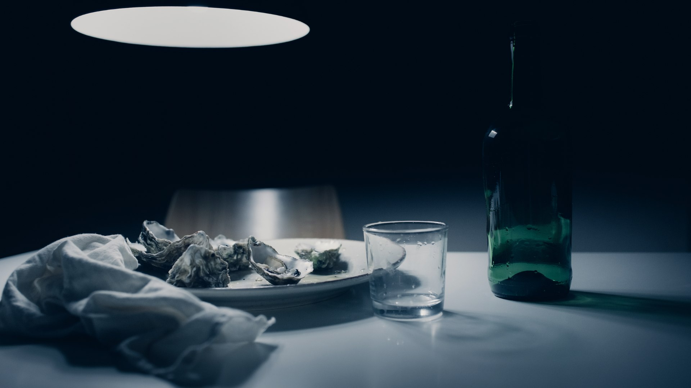
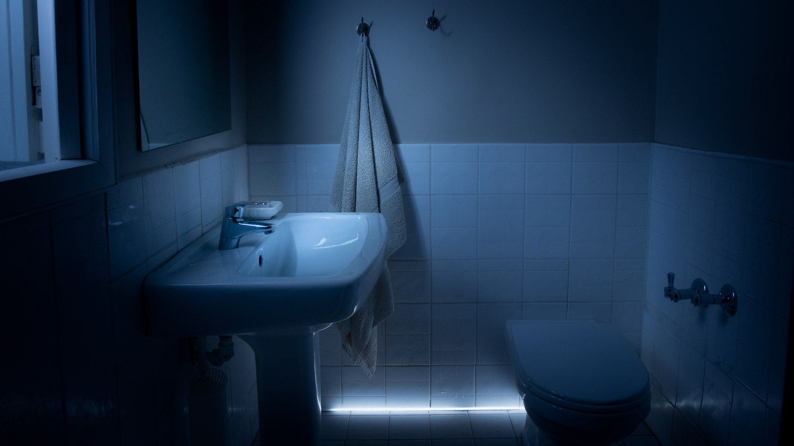
오늘
19:00굴을 먹은 지 0시간
몸속의 시간 · 잠복기
저녁 7시에
생굴을 먹었다고 가정해 보자.
증상은 보통
12~48시간 뒤 나타난다.
바이러스에 노출된 뒤 증상이 시작되기까지의 시간, 곧 잠복기다.
증상
구토나 설사가
갑자기 시작될 수 있다.
복통과 메스꺼움이 함께 오기도 한다. 열이 나거나 머리와 근육이 아픈 경우도 있다.
대부분 1~3일 안에
회복한다.
문제는 탈수다. 특히 어린이와 고령자, 면역력이 약한 사람은 심해질 수 있어 주의해야 한다.
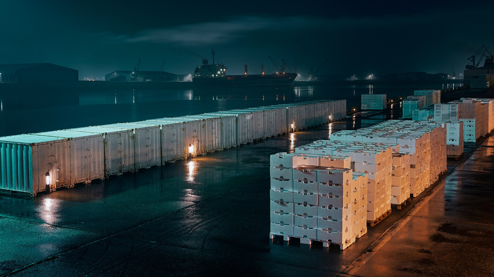
0차례
미국으로 수출된 냉동 굴에서 노로바이러스가 검출돼
폐기·리콜된 횟수(2024~2025년)
6차례 모두 국내 수출검사에서 적합 판정을 받은 냉동 굴이었다. 현지에서 폐기되거나 리콜됐다.자료: 신장식 의원실·해양수산부·국립수산물품질관리원
검사 체계
선적 직전 완제품의
노로바이러스 검사는 의무가 아니다.
생식용 굴의 식품 기준에 노로바이러스 검사항목이 별도로 없고, 정부는 감염 우려 해역과 ‘가열조리용’ 표시 등을 관리한다. 시중 제품에 대한 별도 수거·검사는 시행하고 있다.
산지
굴은 한국의 대표
수출 수산물이다.
한국은 세계 2위 굴 생산국이다. 국회에서는 생산 해역의 오염원 관리와 수출 전 검사를 강화해야 한다는 지적이 나왔다. 식약처는 2027년 2월 26일까지 생식용 굴을 포함한 겨울철 수산물 720건을 수거해 검사할 계획이다.
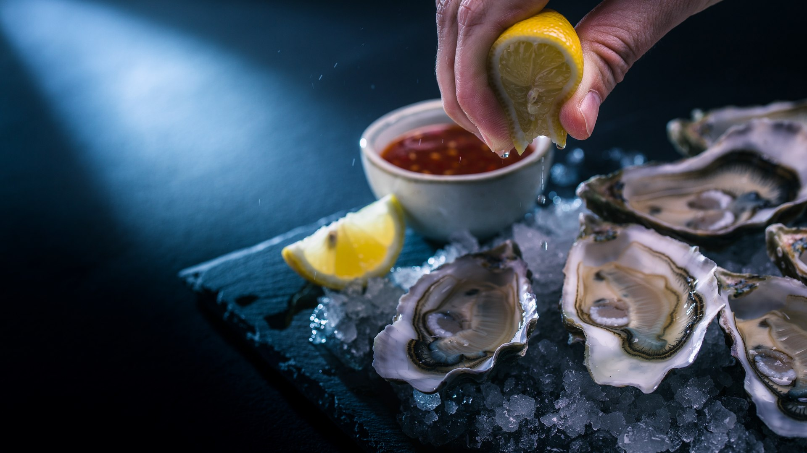
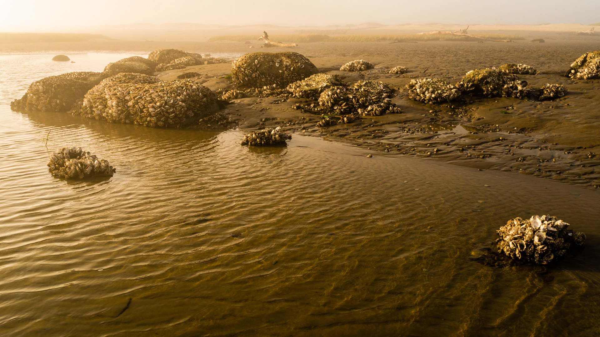
흔한 오해
비브리오균
생굴에는
비브리오균도 있을 수 있다.
비브리오균은 연안 바닷물에 자연적으로 사는 세균이다. 그중 비브리오 불니피쿠스균은 패혈증을 일으킬 수 있다. 미국 CDC에 따르면 이 균 감염자의 약 20%가 숨진다. 노로바이러스와는 다른 위험이다.
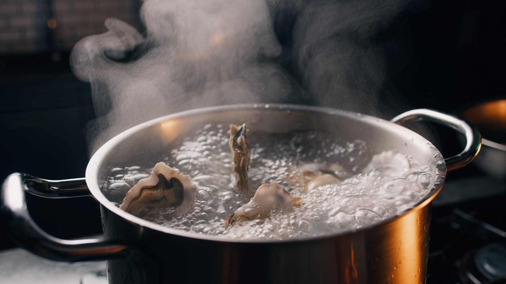
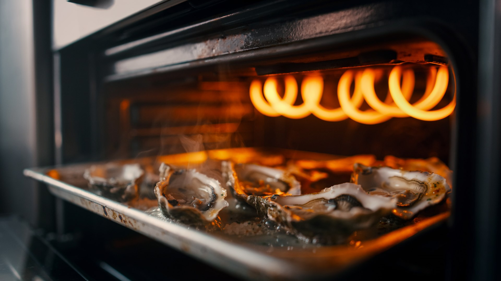
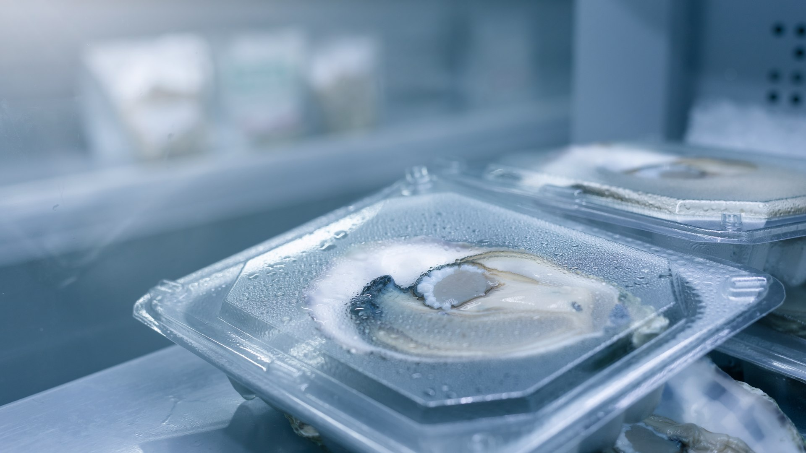
CDC 기준 · 껍데기 벗긴 굴
끓는 물에서 최소 3분
미국 CDC는 껍데기를 벗긴 굴을 이처럼 충분히 가열하라고 권고한다.
튀길 때
약 190℃(375°F) 기름에서 3분 이상
오븐에 구울 때
약 230℃(450°F)에서 10분
식약처 기준
85℃ · 1분
포장에 ‘가열조리용’이나 ‘익혀 먹는’이 적힌 굴은
중심 온도 85℃ 이상에서 1분 이상 익혀야 한다
‘가열조리용’ 표시는 날로 먹지 말라는 뜻이다.
껍데기째 익힐 때
끓는 물에 넣고
껍데기가 벌어지길 기다린다.
벌어진 뒤에도
3~5분 더 끓인다.
껍데기가 벌어져도 속까지 익히는 시간이 더 필요하다.
끝까지 열리지 않는 굴은
버린다.
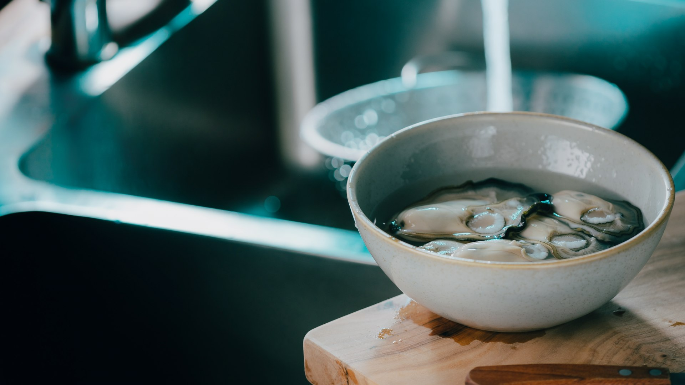
조리 위생
생굴을 손질한 손과 도마도
오염 경로가 될 수 있다.
- 생굴을 만진 뒤엔 비누로 흐르는 물에 30초 이상 손 씻기
- 칼·도마는 바로 씻고, 날것과 익힌 음식용을 나눠 쓰기
- 생굴에서 나온 물이 다른 식재료에 닿지 않게 하기
- 구토·설사 증상이 있으면 음식 만들지 않기
경로가 확인된 집단발생에서는
사람 간 전파가 더 많았다.
질병관리청 잠정 집계에서 2025년 감염경로가 확인된 노로바이러스 집단발생 102건 가운데 63건(61.8%)이 사람 간 전파였다. 그중 45건은 어린이집과 유치원에서 발생했다.
식탁에서 위험을 줄이는 방법은
굴을 충분히 익히는 것이다.
식약처도 생굴은 가열해 먹도록 권고한다.
A씨는 지금도
생굴을 먹지 않는다.
굴의 오염 여부는 눈으로 구별하기 어렵기 때문이다.